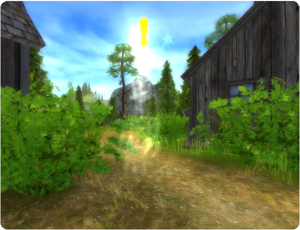
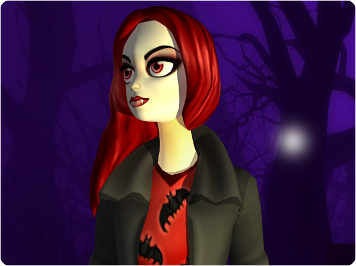

Hi there!
Halloween is almost here and we thought we start of early with Halloween themed quests, clothes and gear!
New quests:
Everyone can suffer from a broken heart, even those who are on the way to the other side. Ride to Nilmer's Highland and see if you can help love find its way home again!

Halloween gear for your horse:
Decorate your horse in spooky saddles, bridles and legwraps! These are available in special Halloween Shops in Fort Pinta, Silverglade Village, and outside of Moorland!
Halloween clothes:
Dress up for Halloween in scary costumes! These can also be found in the Halloween Shops in Fort Pinta, Silverglade Village, and outside of Moorland!
Halloween makeup:
Put on makeup to look like a vampire! Or why not try the skeleton makeup?! You will find the makeups in all the Beauty Salons around Jorvik!

All the Halloween inspired makeup, horse gear and clothes will be available for two weeks starting today!
Regards: